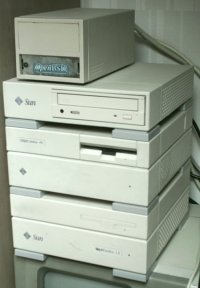

Sun produit encore de nos jours de puissantes stations Unix sous leur OS propriétaire: Solaris (ou SunOS). La gamme des SparcStation, (sun4, sun4c, sun4m) représente la première gamme de stations utilisants le processeur Sparc 32 bits. La gamme sera remplacée ensuite par la gamme des stations Ultra (sun4u), qui utilisent le processeur UltraSparc (version 64 bits du Sparc).
J'aime bien cette gamme de station Sun car, d'un part, c'est des stations Unix (firmware avancé, possibilité de booter sur le réseau et scsi installé de série...), et d'autre part, elle présente une grande variété de format de bus (VME, Sbus, Mbus...) et de boitiers, depuis le minuscule format lunchbox (par exemple la SparcStation IPC), proche du format des mini PC d'aujourd'huis, jusqu'aux énormes racks à cartes VME (le SparcServer 670 MP), proche de la taille d'un réfrigérateur.
Je possède quatre machines de cette gamme:
Certains sites Web ont pour habitude de montrer un dmesg de leurs machines, alors voici un dmesg d'une SparcStation LX sous Linux et d'une SparcStation IPX sous NetBSD.
Sparc (Scalable Processor ARChitecture) est une norme décrivant un processeur Risc, introduite en 1987 par Sun pour remplacer les processeurs Motorola 68020 et 68030 qui équipaient alors leurs stations. Plusieurs fabricants de microprocesseurs dont Fujitsu, Weitek, Texas Instrument produiront des processeurs Sparc. Même l'Agence Spatiale Européenne produira sa propre version du Sparc pour la recherche spatiale: le LEON. A noter que le LEON utilise une licence Open Source, et ce bien avant l'apparition du projet F-CPU.
La gamme des stations et serveurs Sun à base de processeurs Sparc inaugure la gamme SUN4. La première machine de cette gamme date de 1987. C'est la 4/260, qui tournait à 16 Mhz. La première à posséder le nom SparcStation est la SparcStation 1, sortie en 1989. Elle inaugure aussi le port d'extension Sbus. En même temps, l'ensemble de la gamme Sun4 prend le nom SparcStation (par exemple la Sun 4/330 est renommée en SparcStation 330).
En 1990 sortent la SparcStation 1+, lifting de la SparcStation 1, la SparcStation IPC, première station au format lunchbox et la SparcStation SLC, un moniteur noir et blanc dans lequel on a glissé une carte mère de SparcStation. L'année suivante elles seront remplacées respectivements par les SparcStation 2, SparcStation IPX et SparcStations ELC.
Les SparcStation 2 et IPX sont remplacées en 1993 par la SparcStation 10 pour la première et les SparcStations LX et SparcClassic pour la seconde. Si les SparcClassic et SparcStation LX n'innovent pas beaucoup par rapport à l'IPX, ce n'est pas le cas de la SparcStation 10. Celle ci, qui à l'origine se nommait SparcStation 3, introduit le port Mbus, permettant de changer le processeur facilement. Son architecture interne change aussi. Elle accepte plus de mémoire et plus de cartes Sbus. Elle accepte également plus d'un processeur.
En 1994 sortent les SparcStation 4, 5, 20 et Voyager. Les SparcStation 4, 5 et 20 utilisent le même boitier Aurora. La 4 représente le bas de gamme, la 5 le milieu de gamme et la 20 le haut de gamme. Les SparcStations 4 et 5 possèdent un processeur soudé à la carte mère. La 20 reprend beaucoup de caractéristique de la SparcStation 10, dont 2 ports Mbus et 4 ports Sbus. La SparcStation Voyager est une station intégrant dans l'unité centrale, un écran LCD 12 ou 14 pouces en couleurs ou à niveaux de gris et des ports PCMCIA et infrarouge.
Les SparcStations seront ensuites remplacées par la gamme Ultra (SUN4U) avec l'Ultra 1, la première station 64 bits de Sun (novembre 1995). La SparcStation 5 sera gardée en production encore quelque temps, comme entrée de gamme. L'architecture Sparc 32bits sera aussi utilisée dans les JavaStations.
Les stations Sun possède en ROM l'OpenBoot, équivalent du BIOS des PC. L'OpenBoot est une puissante ligne de commande programmable en Forth qui permet de faire un diagnostique de la machine, de définir les paramètre du boot, l'adresse Ethernet de la carte réseau et d'autre paramètres. Pour en savoir plus sur l'OpenBoot, vous pouvez consulter sa FAQ.
A partir des SparcStation, les stations Sun stockent les paramètres de l'OpenBoot dans une NVRAM (Non Volatile RAM), un composant ram qui possède sa propre alimentation, et qui n'est donc pas effacé à l'extinction de la machine. L'avantage de ce genre de solution est par exemple l'impossibilité d'effacer le mot de passe de l'OpenBoot simplement en enlevant la pile, puisque le tout est regroupé dans un seul composant. Le problème est qu'une fois la pile intégrée à la NVRAM morte, il faut remplacé le composant en entier.
A cause de leur age, les SparcStations possèdent souvent une NVRAM défectueuse. Celle ci empèche la station de booter normalement. Une solution temporaire consiste à reprogrammer la NVRAM à chaque boot. La solution définitive consiste soit à remplacer la NVRAM, soit à la réparer.
La réparation consiste à remplacer la pile intégrée. Cette solution est décrite sur cette page. Cette opération est délicate. L'autre solution consiste à trouver une NVRAM neuve ou un composant équivalent. C'est la solution que j'ai choisi. Il m'a suffi de commander un échantillon auprès de maxim-ic. La référence est DS1642, à prendre en 70ns. Maxim envoi deux échantillons gratuits à qui en fait la demande.
Une fois la NVRAM remplacée, ou avec la NVRAM défectueuse si vous ne voulez booter qu'une fois, il faut reprogrammer celle ci. Cette opération se fait en accédant à l'OpenBoot par l'appui simultané des touches STOP et A ou par l'envoi du caractère ESCAPE si la station utilise un terminal sur le port console. Un menu apparait alors proposant entre autre un "new command mode". Appuyez sur n pour entrer dans celui ci.
Une fois dans l'OpenBoot, pour une SparcStation IPC, entrez la séquence de commandes suivante:
On a défini ici le type de machine à la ligne 3, l'adresse Ethernet 08:00:20:c0:ff:ee de la ligne 4 à 9, le HostID de la ligne 14 à 16 et enfin on calcul un checksum à la ligne 17. Le HostID et l'adresse Ethernet peuvent être choisi par l'utilisateur (attention à ne pas prendre d'adresse Ethernet deja utilisée sur le réseau.). Le type de machine est déterminé par le tableau suivant (pour les stations à base de Sparc):
| Type | Station |
|---|---|
| 21 | 4/2x0 |
| 22 | 4/1x0 |
| 23 | 4/3x0 |
| 24 | 4/4x0 |
| 51 | SparcStation 1 |
| 52 | SparcStation IPC |
| 53 | SparcStation 1+ |
| 54 | SparcStation SLC |
| 55 | SparcStation 2 |
| 56 | SparcStation ELC |
| 57 | SparcStation IPX |
| 61 | 4/e |
| 71 | 4/6x0 |
| 72 | SparcStation 10 or SparcStation 20 |
| 80 | SparcStation Classic, LX, 4, 5, SS1000, Voyager, Ultra 1 |
Une fois la NVRAM reprogrammée, il suffit de booter avec la commande "boot" (par exemple "boot cdrom" pour booter sur le cdrom).
Pour plus de détail sur la NVRAM, vous pouvez consulter la FAQ sur la NVRAM
{kind=link}